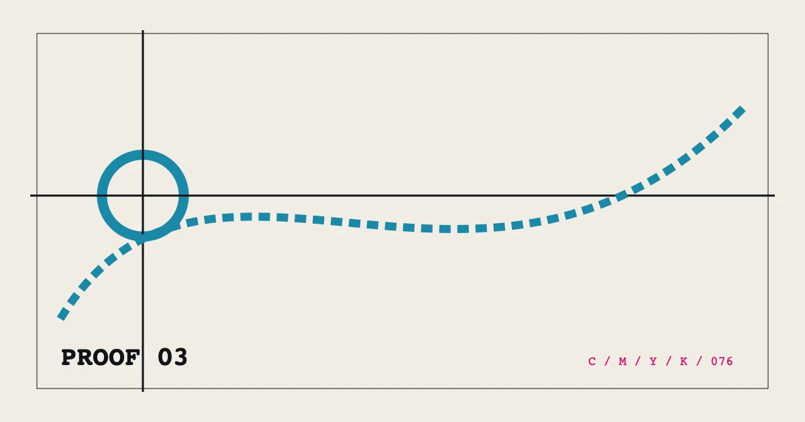

PROOF 03%%P03_EYEBROW%%
%%P03_TITLE%%
%%P03_SUMMARY%%- 编写
- %%AUTHOR_NAME%%
- 发布
- 复核

展开校样目录
%%P03_SECTION_LABEL_1%%
%%P03_H2_1%%
%%P03_BODY_1_A%%
%%P03_DATE_TITLE_1%%
%%P03_DATE_TEXT_1%%
%%P03_DATE_TITLE_2%%
%%P03_DATE_TEXT_2%%
%%P03_DATE_TITLE_3%%
%%P03_DATE_TEXT_3%%
%%P03_DATE_TITLE_4%%
%%P03_DATE_TEXT_4%%
%%P03_BODY_1_B%%
%%P03_SECTION_LABEL_2%%
%%P03_H2_2%%
%%P03_BODY_2_A%%
%%P03_BODY_2_B%%
%%P03_SECTION_LABEL_3%%
%%P03_H2_3%%
%%P03_BODY_3_A%%
%%P03_BODY_3_B%%
%%P03_SECTION_LABEL_4%%
%%P03_H2_4%%
%%P03_BODY_4_A%%
%%P03_BODY_4_B%%
%%P03_FAQ_TITLE%%
%%P03_FAQ_Q_1%%
%%P03_FAQ_A_1%%
%%P03_FAQ_Q_2%%
%%P03_FAQ_A_2%%